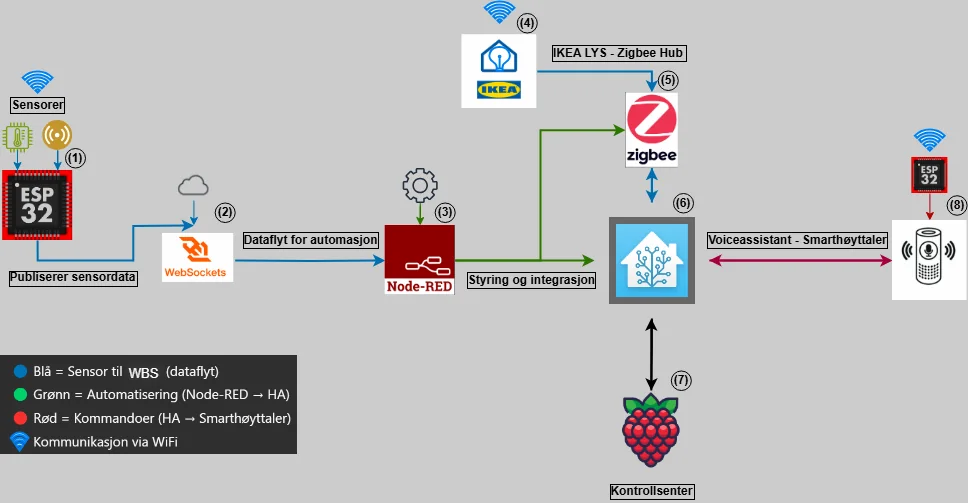
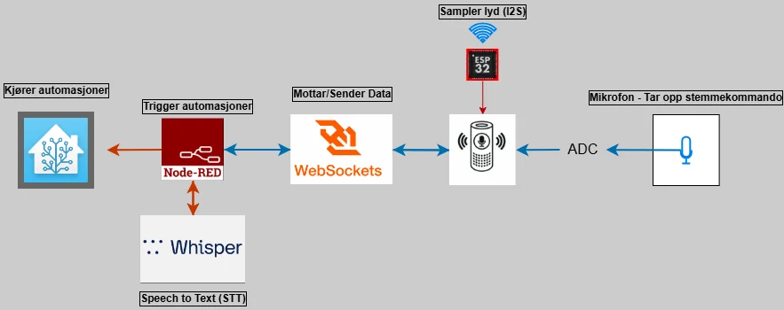
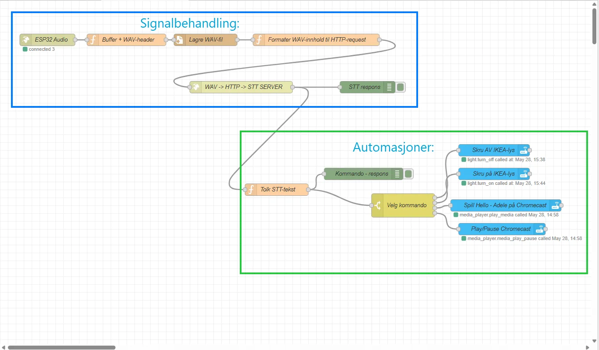
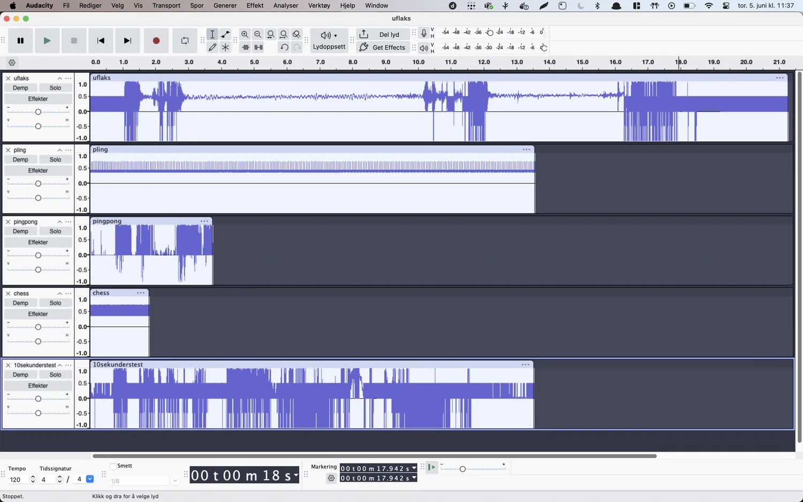
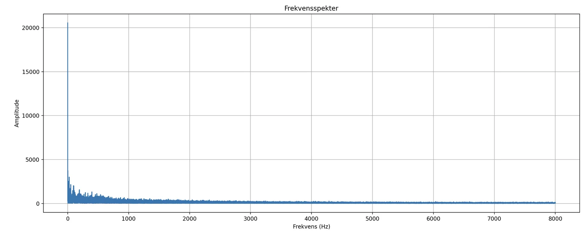
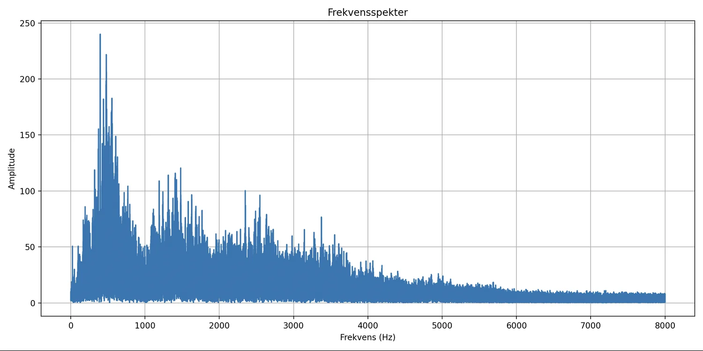

IELS2001 Stemmestyrt assistent
Lokal stemmeassistent for smarthus: ESP32 med I2S-mikrofon strømmer lyd til Node-RED og Whisper, som styrer lys via Home Assistant, uten skytjenester.

Hva vi bygde
Et gruppeprosjekt på to i Ingeniørprosjekt I. En ESP32 samler lyd fra en digital I2S-mikrofon og sender den over WebSocket til Node-RED. Der lages en WAV-fil som transkriberes lokalt av Whisper (faster-whisper i Docker), og teksten utløser automasjoner i Home Assistant, blant annet å skru en IKEA Trådfri-pære av og på.




Utfordringer og løsninger
- Opprinnelig mål var en smarthøyttaler, men bestillingsproblemer hos leverandøren gjorde at prosjektet ble lagt om til en stemmeassistent uten lydavspilling.
- Lyden skurret på grunn av DC-offset. Etter en DFT-analyse ble det løst med et digitalt høypassfilter.
- MQTT ble byttet ut med WebSocket for å unngå base64-koding og redusere forsinkelsen.






Resultater
- Responstid på 3,2 til 5,1 sekunder, mot et krav på under 5 sekunder i rolige omgivelser.
- Treffrate på 90 prosent i stille rom, og 40 til 70 prosent med bakgrunnsstøy. Vanlige feiltolkninger ble lagt inn som alternative kommandoer.
- Hele systemet kjører lokalt, uten skytjenester.